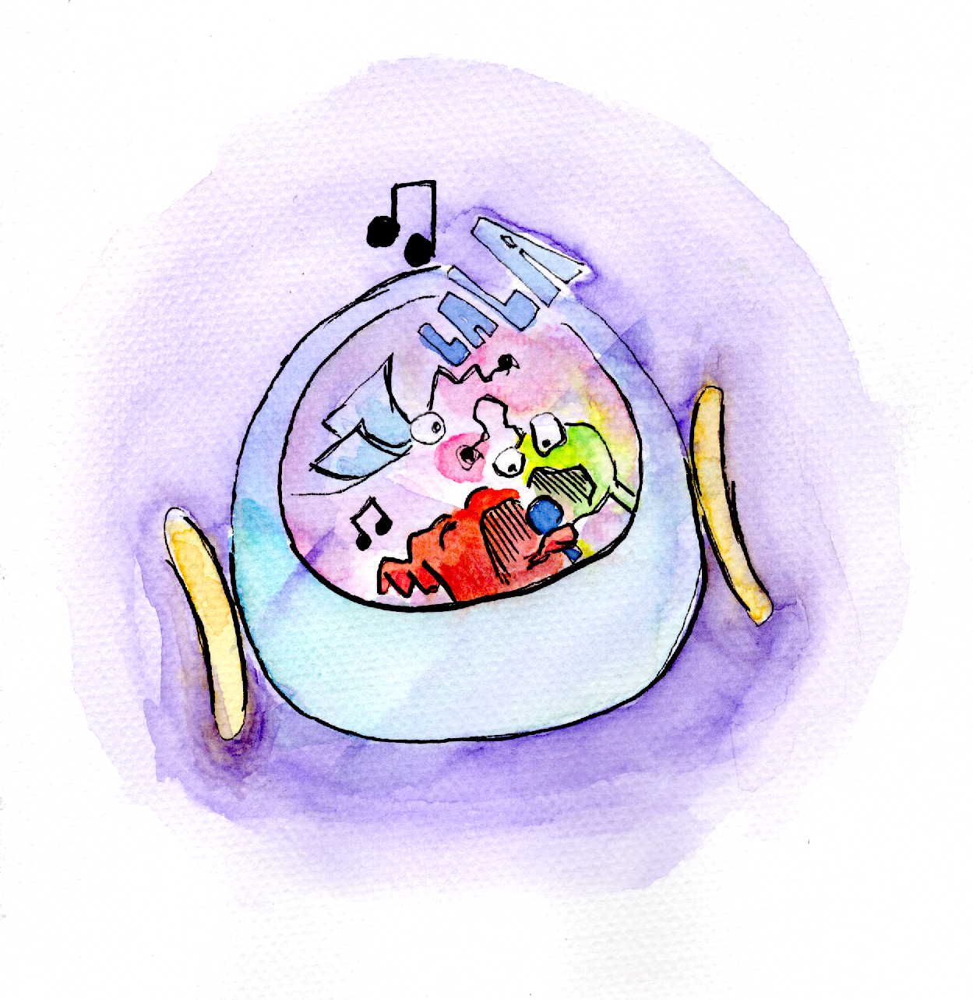
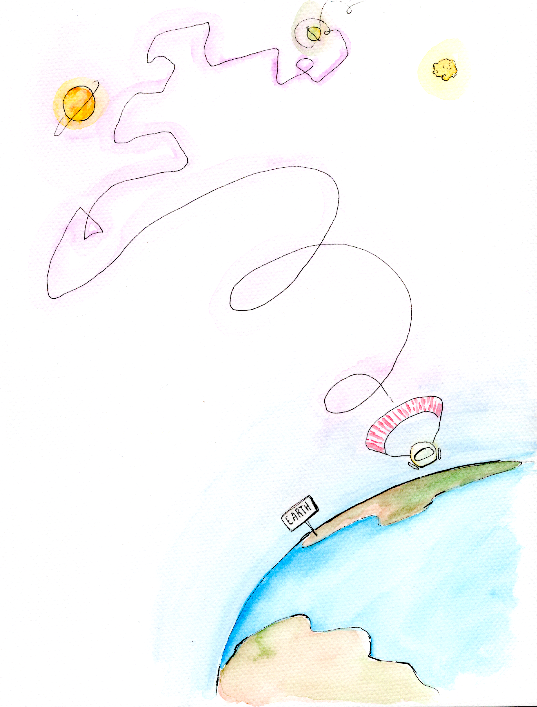
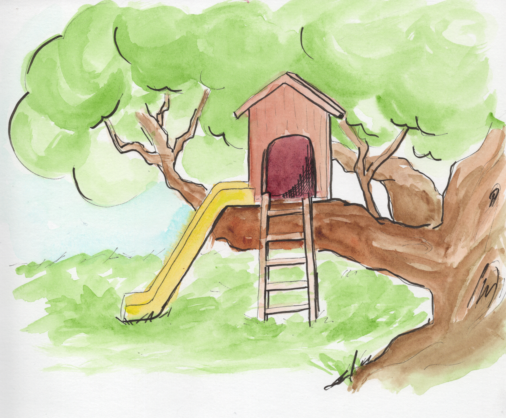
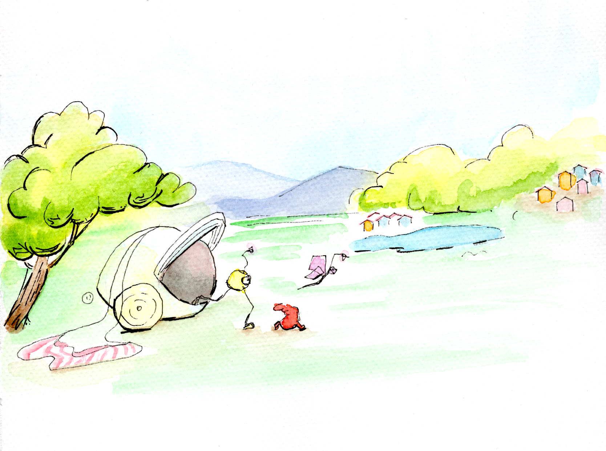
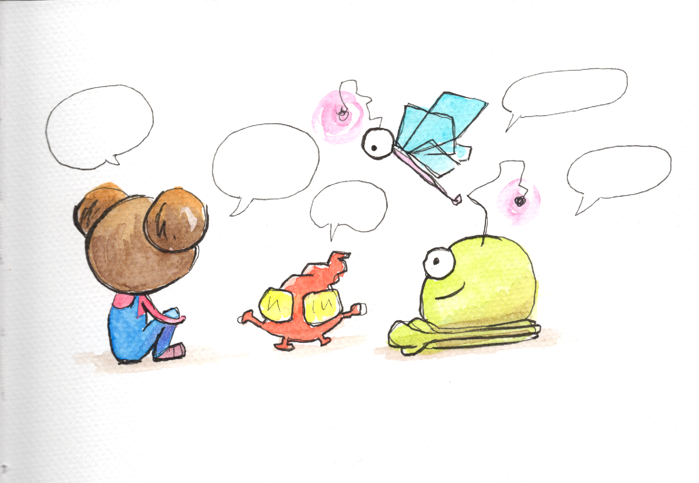
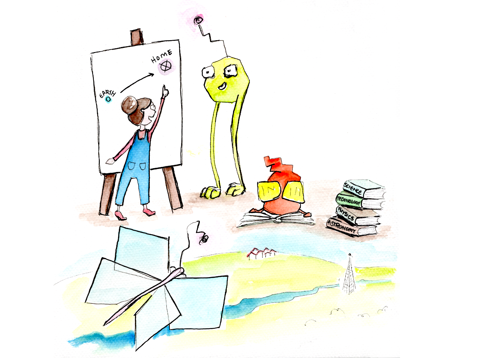
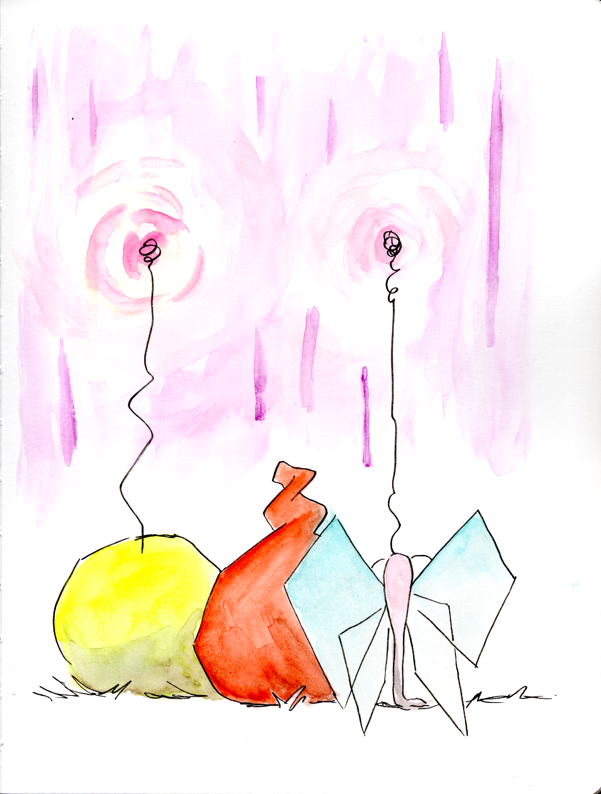
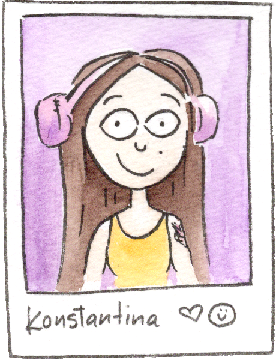

01Space Bike Adventures
An evening ride through the galaxy. No helmet required — until things go very, very off-course.
Ami, Lu, and Bam, young habitants of a nearby galaxy, set off on an evening space-bike ride and crash-land on Earth, into the greatest adventure of their lives.
Earth is strange and beautiful. Sally is braver than anyone they've met. And the way home turns out to require something no star map could ever show.
Explore the StoryAt home, light never leaves the sky. A planet of two suns where all species live as equals. Earth is something else entirely.
Landing in the unknown, Ami, Lu, and Bam explore with equal parts wonder and fear. The animals they meet are wise and cautious: "beware of humans", they say — "they are not always kind to those unlike themselves. But if you want to find your way home, the cities are where to look."


Sally had big plans for Saturday morning: her treehouse, her books, her favourite kind of quiet. What she didn't plan for was three small, wide-eyed aliens sitting in the corner, looking just as terrified as she felt.
The screaming didn't last long. Neither did the fear. What grew in its place was something neither Sally nor Ami, Lu, and Bam had words for yet, in any language. She brought food and blankets, and listened to stories of two suns and equality. They listened back, and learned a lot about birds and nana Joanne.
And together, in Sally's treehouse — wooden and warm and suddenly the most important place in the universe — they found something that felt a lot like hope.
Lost Among Stars is a tale about the particular kind of lost that has nothing to do with maps.
It is about the courage it takes to be somewhere unfamiliar, and the unexpected grace of finding a friend there. About how care and support can make even the most impossible plan feel possible.
And it is about the oldest truth of all: that the answers we search the universe for are often waiting quietly inside us — patient, warm, and ready, the moment we stop long enough to feel them.

01An evening ride through the galaxy. No helmet required — until things go very, very off-course.

02Gravity. Puddles. The colour green everywhere. Earth is the strangest planet they have ever seen.

03Sally has a rule: no grown-ups in the treehouse. Aliens, it turns out, are a different matter entirely.

04The space-bike needs fixing. The stars are waiting. And saying goodbye is harder than it looks.

05Distance is just space between hearts. And some friendships travel further than any bike ever could.

An illustrator, artist, and designer with a deep love for storytelling, world-building, and all things fantasy.
Every creation holds a piece of my soul, wishing to spread smiles, beauty, and warmth.
Lost Among Stars is my debut picture book. Born from my love of spirituality, fiction, and adventure — this is a story I've loved telling my friends, their kids, and now, the world's kids.
I live and work in Athens, Greece, and I'd love to connect with people from anywhere on this planet — or beyond, even 🌟
Lost Among Stars is looking for its home in the publishing world, and it's already out there making friends. The draft-book will be travelling with me and my illustrator friends to the Bologna Children's Book Fair in April 2026!
I would love to connect with publishers, agents, and fellow creators who believe in the magic of illustrated stories. Whether you're interested in Lost Among Stars or a future project, don't hesitate to reach out.